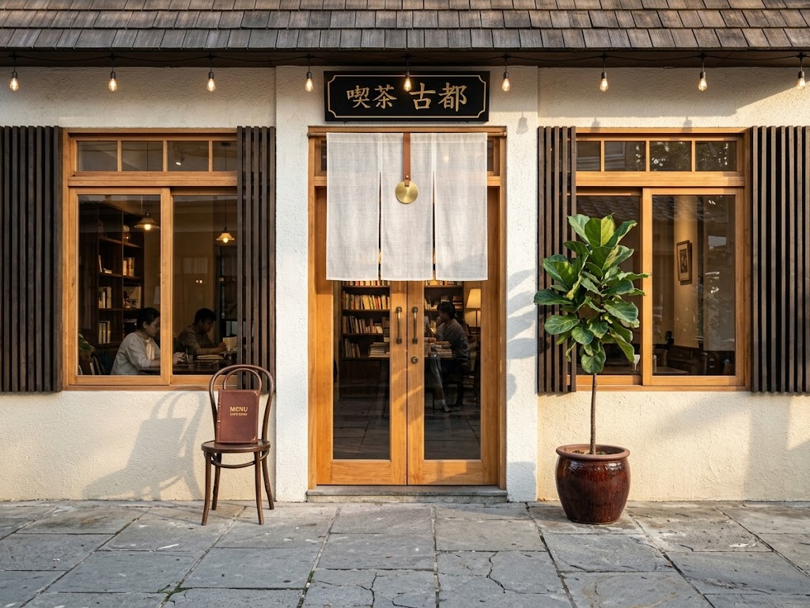

Access
アクセス
京都の路地の奥、町家の小さな焙煎所です。
How to find us
路地の入り方
-

通り沿いの白い行灯
[通り名]沿いに、白い行灯が立っています。
Look for a white lantern on the street. -
路地の入口
行灯の横の細い路地を、奥へ二十歩ほど進みます。
Walk about 20 steps down the alley. -

暖簾のかかった店先
生成りの暖簾が見えたら到着です。
You'll find us behind the noren curtain.
Information
店舗情報
- 店名
- 路地珈琲 こはく ROJI COFFEE KOHAKU
- 住所
- 京都市中京区 [架空の住所]
- 営業時間
- 9:00〜18:00(L.O. 17:30)
Open 9:00–18:00 (Last order 17:30) - 定休日
- 水曜日(臨時休業はInstagramでお知らせします)
Closed on Wednesdays - 席数
- 12席(カウンター6席・テーブル6席)
12 seats - 最寄り駅
- [最寄り駅]から徒歩[○]分
- お問い合わせ
- InstagramのDMにて承ります
Please contact us via Instagram DM
ご来店の前に
- 小さなお店のため、4名様以上はお待ちいただくことがあります。
- ベビーカーは店先でお預かりします。
- 全席禁煙です。